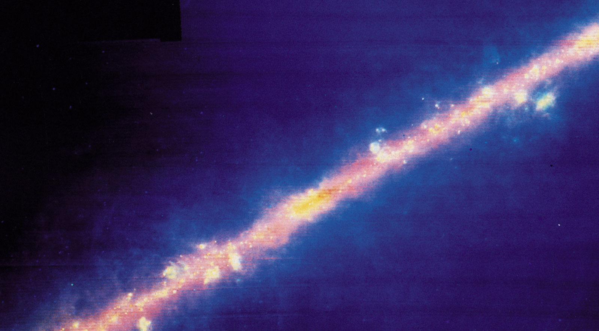
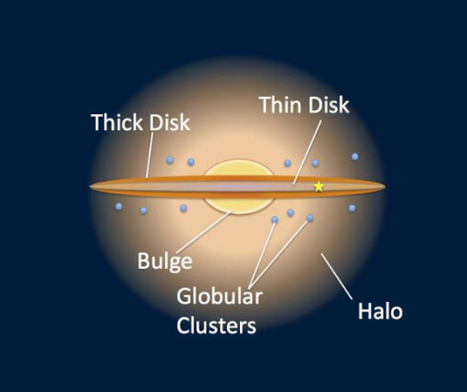
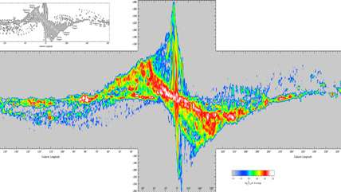
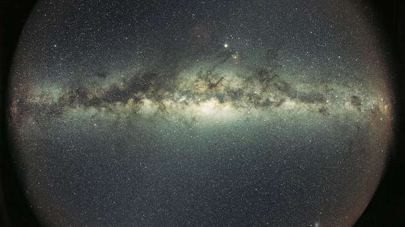
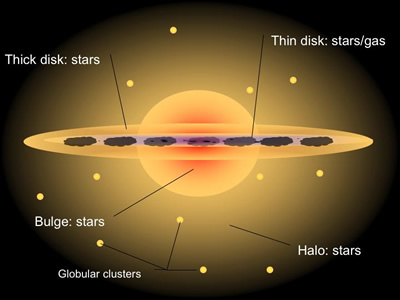
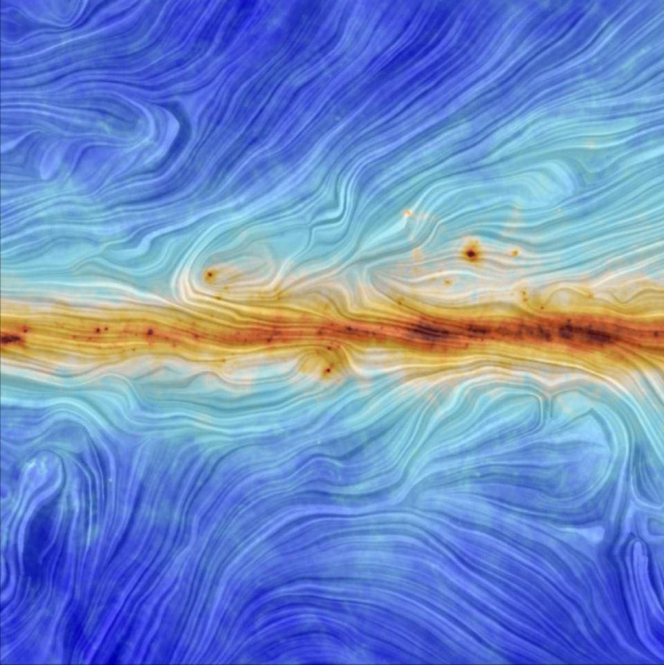

Structure of the Milky Way
The Milky Way Galaxy’s structure is fairly typical of a large spiral system. (Spiral galaxies and other types of galaxies are described in the article galaxy.) This structure can be viewed as consisting of six separate parts:
(1) a nucleus
(2) a central bulge
(3) a disk (both a thin and a thick disk)
(4) spiral arms
(5) a spherical component
(6) a massive halo.
Some of these components blend into each other.
Watch this video to see the 3d structure of Milky Way :-
The Nucleus
At the very centre of the Galaxy lies a remarkable object—a massive black hole surrounded by an accretion disk of high-temperature gas. Neither the central object nor any of the material immediately around it can be observed at optical wavelengths because of the thick screen of intervening dust in the Milky Way. The object, however, is readily detectable at radio wavelengths and has been dubbed Sagittarius A* by radio astronomers. Somewhat similar to the centres of active galaxies (see below), though on a lesser scale, the galactic nucleus is the site of a wide range of activity apparently powered by the black hole. Infrared radiation and X-rays are emitted from the area, and rapidly moving gas clouds can be observed there. Data strongly indicate that material is being pulled into the black hole from outside the nuclear region, including some gas from the z direction (i.e., perpendicular to the galactic plane). As the gas nears the black hole, the central object’s strong gravitational force squeezes the gas into a rapidly rotating disk, which extends outward about 5–30 light-years from the black hole. Rotation measurements of the disk and the orbital motions of stars (seen at infrared wavelengths) indicate that the black hole has a mass more than 4,000,000 times that of the Sun. (For the infrared observations that established that Sagittarius A* was a black hole, American astronomer Andrea Ghez and German astronomer Reinhard Genzel were awarded the 2020 Nobel Prize for Physics.)

The central bulge
Surrounding the nucleus is an extended bulge of stars that is nearly spherical in shape and that consists primarily of Population II stars, though they are comparatively rich in heavy elements. (For an explanation of Population II stars, see Stars and stellar populations.) Mixed with the stars are several globular clusters of similar stars, and both the stars and the clusters have nearly radial orbits around the nucleus. The bulge stars can be seen optically where they stick up above the obscuring dust of the galactic plane.
The Disk
From a distance the most conspicuous part of the Galaxy would be the disk, which extends from the nucleus out to approximately 75,000 light-years. The Galaxy resembles other spiral systems, featuring as it does a bright, flat arrangement of stars and gas clouds that is spread out over its entirety and marked by a spiral structure. The disk can be thought of as being the underlying body of stars upon which the arms are superimposed. This body has a thickness that is roughly one-fifth its diameter, but different components have different characteristic thicknesses. The thinnest component, often called the "thin disk," includes the dust and gas and the youngest stars, while a thicker component, the "thick disk,” includes somewhat older stars.
The Spiral Arms
Astronomers did not know that the Galaxy had a spiral structure until 1953, when the distances to stellar associations were first obtained reliably. Because of the obscuring interstellar dust and the interior location of the solar system, the spiral structure is very difficult to detect optically. This structure is easier to discern from radio maps of either neutral hydrogen or molecular clouds, since both can be detected through the dust. Distances to the observed neutral hydrogen atoms must be estimated on the basis of measured velocities used in conjunction with a rotation curve for the Galaxy, which can be built up from measurements made at different galactic longitudes.
The spherical component
The space above and below the disk of the Galaxy is occupied by a thinly populated extension of the central bulge. Nearly spherical in shape, this region is populated by the outer globular clusters, but it also contains many individual field stars of extreme Population II, such as RR Lyrae variables and dwarf stars deficient in the heavy elements. Structurally, the spherical component resembles an elliptical galaxy, following the same simple mathematical law of how density varies with distance from the centre.
The massive halo
The least-understood component of the Galaxy is the giant massive halo that is exterior to the entire visible part. The existence of the massive halo is demonstrated by its effect on the outer rotation curve of the Galaxy (see below Mass). All that can be said with any certainty is that the halo extends considerably beyond a distance of 100,000 light-years from the centre and that its mass is several times greater than the mass of the rest of the Galaxy taken together. It is not known what its shape is, what its constituents are, or how far into intergalactic space it extends.
Magnetic field
It was once thought that the spiral structure of galaxies might be controlled by a strong magnetic field. However, when the general magnetic field was detected by radio techniques, it was found to be too weak to have large-scale effects on galactic structure. The strength of the galactic field is only about 0.000001 times the strength of Earth’s field at its surface, a value that is much too low to have dynamical effects on the interstellar gas that could account for the order represented by the spiral-arm structure. This is, however, sufficient strength to cause a general alignment of the dust grains in interstellar space, a feature that is detected by measurements of the polarization of starlight. In the prevailing model of interstellar dust grains, the particles are shown to be rapidly spinning and to contain small amounts of metal (probably iron), though the primary constituents are ice and carbon. The magnetic field of the Galaxy can gradually act on the dust particles and cause their rotational axes to line up in such a way that their short axes are parallel to the direction of the field. The field itself is aligned along the Milky Way band, so that the short axes of the particles also become aligned along the galactic plane. Polarization measurements of stars at low galactic latitudes confirm this pattern.
Rotation
The motions of stars in the local stellar neighbourhood can be understood in terms of a general population of stars that have circular orbits of rotation around the distant galactic nucleus, with an admixture of stars that have more highly elliptical orbits and that appear to be high-velocity stars to a terrestrial observer as Earth moves with the Sun in its circular orbit. The general rotation of the disk stars was first detected through studies made in the 1920s, notably those of the Swedish astronomer Bertil Lindblad, who correctly interpreted the apparent asymmetries in stellar motions as the result of this multiple nature of stellar orbital characteristics.
The disk component of the Galaxy rotates around the nucleus in a manner similar to the pattern for the planets of the solar system, which have nearly circular orbits around the Sun. Because the rotation rate is different at different distances from the centre of the Galaxy, the measured velocities of disk stars in different directions along the Milky Way exhibit different patterns. The Dutch astronomer Jan H. Oort first interpreted this effect in terms of galactic rotation motions, employing the radial velocities and proper motions of stars. He demonstrated that differential rotation leads to a systematic variation of the radial velocities of stars with galactic longitude following the mathematical expression
radial velocity = Ar sin 2l,
where A is called Oort’s constant and is approximately 15 km/sec/kiloparsec (1 kiloparsec is 3,260 light-years), r is the distance to the star, and l is the galactic longitude.
A similar expression can be derived for measured proper motions of stars. The agreement of observed data with Oort’s formulas was a landmark demonstration of the correctness of Lindblad’s ideas about stellar motions. It led to the modern understanding of the Galaxy as consisting of a giant rotating disk with other, more spherical, and more slowly rotating components superimposed.
Mass
The total mass of the Galaxy, which had seemed reasonably well established during the 1960s, has become a matter of considerable uncertainty. Measuring the mass out to the distance of the farthest large hydrogen clouds is a relatively straightforward procedure. The measurements required are the velocities and positions of neutral hydrogen gas, combined with the approximation that the gas is rotating in nearly circular orbits around the centre of the Galaxy. A rotation curve, which relates the circular velocity of the gas to its distance from the galactic centre, is constructed. The shape of this curve and its values are determined by the amount of gravitational pull that the Galaxy exerts on the gas. Velocities are low in the central parts of the system because not much mass is interior to the orbit of the gas; most of the Galaxy is exterior to it and does not exert an inward gravitational pull. Velocities are high at intermediate distances because most of the mass in that case is inside the orbit of the gas clouds and the gravitational pull inward is at a maximum. At the farthest distances, the velocities decrease because nearly all the mass is interior to the clouds. This portion of the Galaxy is said to have Keplerian orbits, since the material should move in the same manner that the German astronomer Johannes Kepler discovered the planets to move within the solar system, where virtually all the mass is concentrated inside the orbits of the orbiting bodies. The total mass of the Galaxy is then found by constructing mathematical models of the system with different amounts of material distributed in various ways and by comparing the resulting velocity curves with the observed one. As applied in the 1960s, this procedure indicated that the total mass of the Galaxy was approximately 200 billion times the mass of the Sun.
During the 1980s, however, refinements in the determination of the velocity curve began to cast doubts on the earlier results. The downward trend to lower velocities in the outer parts of the Galaxy was found to have been in error. Instead, the curve remained almost constant, indicating that there continue to be substantial amounts of matter exterior to the measured hydrogen gas. This in turn indicates that there must be some undetected material out there that is completely unexpected. It must extend considerably beyond the previously accepted positions of the edge of the Galaxy, and it must be dark at virtually all wavelengths, as it remains undetected even when searched for with radio, X-ray, ultraviolet, infrared, and optical telescopes. Until the dark matter is identified and its distribution determined, it will be impossible to measure the total mass of the Galaxy, so all that can be said is that the mass is at least several hundred billion, and possibly one trillion, times the mass of the Sun.
The nature of the dark matter in the Galaxy remains one of the major questions of galactic astronomy. Many other galaxies also appear to have such undetected matter. In the 1990s astronomers carried out exhaustive lensing experiments involving the study of millions of stars in the galactic central areas and in the Magellanic Clouds to search for dark objects whose masses would cause lensed brightenings of background stars. Some lensing events were detected, but the number of dark objects inferred is not enough to explain completely the dark matter in galaxies and galaxy clusters. It is likely that the dark matter consists of some undiscovered particle, such as a WIMP (weakly interacting massive particle).